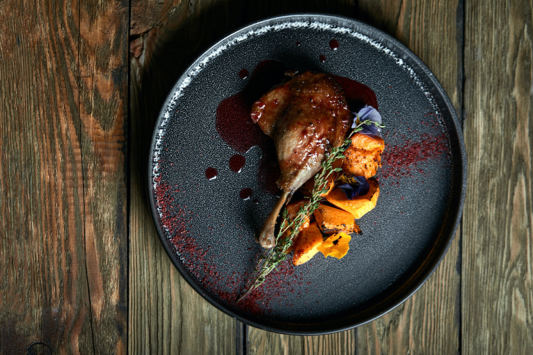

Back

Confit is a traditional cooking technique that involves cooking and preserving meat in its own fat. The best-known example is confit de canard (duck confit), but you can confit all kinds of foods, including vegetables.
Duck confit is a French dish made with the whole duck. In Gascony, according to the families perpetuating the tradition of duck confit, all the pieces of duck are used to produce the meal. Each part can have a specific destination in traditional cooking, the neck being used for example in an invigorating soup, the garbure. Duck confit is considered one of the finest French dishes.
Ingredients
4 bone-in, skin-on duck legs with thighs
1 tablespoon kosher salt
1 tablespoon black peppercorns
4 sprigs gresh thyme
4 juniper berrries
2 bay leaves
3 cloves garlic, peeled and halved
4 cups duck fat (or olive oil or chicken fat)
Steps
The day before you plan to cook, prepare the duck legs. French the legs by cutting a deep slit all the way down to the bone, from the ankle joint up to where the meaty part begins. Cut through the tendons and remove the skin, tendons, and cartilage around the bone.
Place the frenched legs in a baking dish and season all over with salt. Add peppercorns, thyme, juniper, bay leaves, and garlic. Cover and refrigerate overnight (up to 24 hours).
Remove the spices and garlic, and arrange the duck legs in a single layer in a large Dutch oven. Warm duck fat in a separate saucepan over medium-low heat until just melted. Pour melted duck fat into Dutch oven.
Cook over medium heat until a few bubbles appear. Reduce heat to low and continue to cook at a bare simmer until duck meat easily separates from the bone, about 2–3 hours.
Remove from the heat and let cool to room temperature in the fat. Transfer the duck legs to a ceramic or glass dish with a lid. Using a fine-mesh strainer, strain the duck fat into a large measuring cup. Pour the fat over the duck legs so that the legs are completely submerged. Cover with a lid and refrigerate up to 6 months.
Reheat duck confit in a cast-iron pan over medium heat. Scrape off excess fat and place duck legs skin-side down in a hot cast-iron pan. Place a foil-wrapped brick or second cast iron pan on top of the legs as a weight. Fry until skin is crispy and well browned, about 10 minutes. Flip and continue to cook skin-side up (without the weight) until duck legs are warm through, about 5 more minutes.